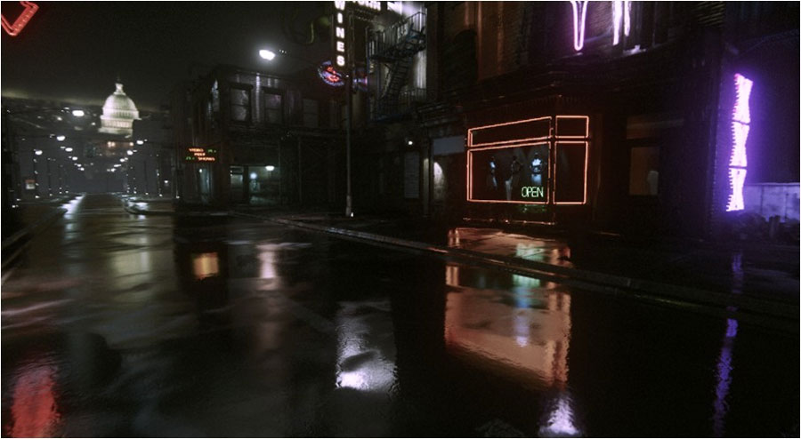
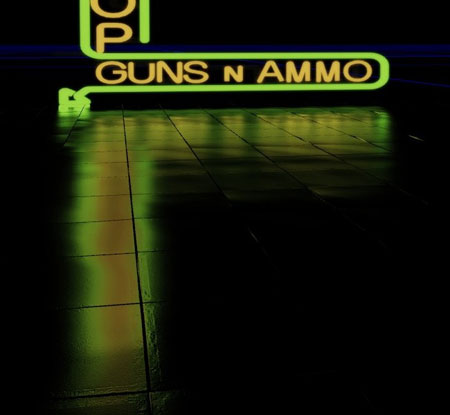
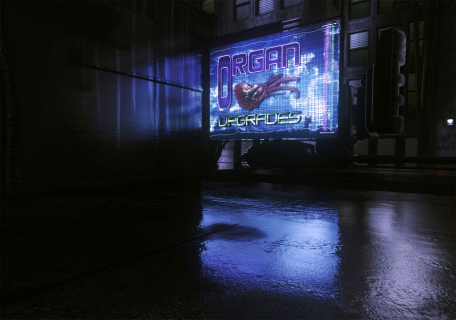
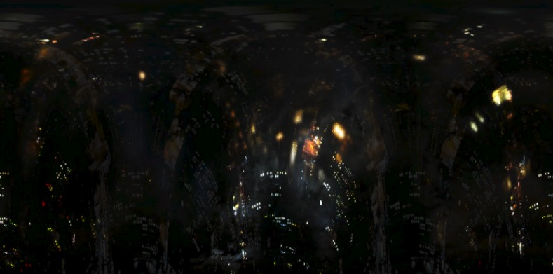
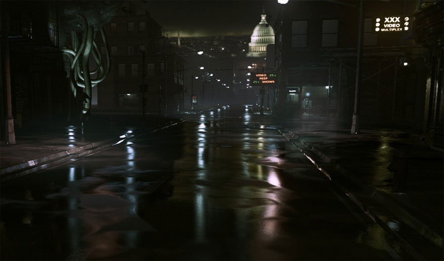

UDN
Search public documentation:
ImageBasedReflectionsKR
English Translation
日本語訳
中国翻译
Interested in the Unreal Engine?
Visit the Unreal Technology site.
Looking for jobs and company info?
Check out the Epic games site.
Questions about support via UDN?
Contact the UDN Staff
日本語訳
中国翻译
Interested in the Unreal Engine?
Visit the Unreal Technology site.
Looking for jobs and company info?
Check out the Epic games site.
Questions about support via UDN?
Contact the UDN Staff
이미지 베이스드 리플렉션
문서 변경내역: Daniel Wright 작성. 홍성진 번역.
개요
- ImageReflectionActors (이미지 리플렉션 액터: 텍스처를 입힌 쿼드)
- bUseImageReflectionSpecular (이미지 리플렉션 스페큘러 사용) 옵션이 켜진 라이트
- 불투명 표면에서의 거친 스태틱 섀도잉
- 다이내믹 오브젝트에서의 다이내믹 섀도잉, ImageReflectionShadowPlane (이미지 리플렉션 그림자 평면)에 대해 반사된 것

이미지 베이스드 리플렉션 켜기
빈 레벨에서 퀵 스타트
- 스태틱 메시나 BSP를 몇 추가합니다.
- 새 머티리얼을 만들고, 값이 1 인 Constant 노드를 Specular 입력에 연결한 다음, bUseImageBasedReflections (이미지 베이스드 리플렉션 사용) 옵션을 켜고, 이 머티리얼을 씬의 메시에 할당합니다.
- 에디터 라이팅포함 모드인지 확인, 라이트가 없으면 자동으로 라이팅제외 모드로 바뀌므로 리플렉션이 표시되지 않을 것입니다.
- 액터 클래스 탭에서 ImageReflectionActor (이미지 리플렉션 액터)를 끌어다 놓고자 하는 지오메트리 위에 놓습니다.
- 리플렉션이 보이도록 카메라를 정렬시킵니다. 디폴트로 ImageReflectionActor (이미지 리플렉션 액터)는 단면이기에 반대 방향으로 돌려줘야 리플렉션이 보일 수 있습니다.
기능
- HDR 리플렉션
- 평면이나 점에 제한되지 않고, 어떤 평면이든 반사 가능합니다.
- 표면에 걸친 다양한 광택이 지원됩니다. 젖은 도로처럼 일부에는 물이 고인 미러 리플렉션 효과를, 다른 곳에는 좀 더 번지르르한 반사면 효과를 내는 경우에 좋습니다.
- 이방성(anisotropic, 역주: CD에 반사되는 모양) 광택 - 반사가 한 방향으로 좀 더 쏠립니다.
- 다이내믹 컴포넌트 - 스태틱 섀도잉 부분을 제외한 반사 부분 전부를 런타임에 변경 가능합니다.
머티리얼 프로퍼티
- bUseImageBasedReflections (이미지 베이스드 리플렉션 사용) - 이 머티리얼에 이미지 베이스드 리플렉션을 켜고/끕니다.
- ImageReflectionNormalDampening (이미지 리플렉션 노멀 완화) - 이미지 리플렉션에 사용되는 노멀을 완화시킵니다. 젖은 표면에 대해 좋은 옵션인데, 바운싱되(튕기)는 디퓨즈 라이팅의 노멀은 더 들쭉날쭉하고, 스페큘러 리플렉션의 노멀은 더 부드러운 경향이 있기 때문입니다. 값이 클 수록 노멀은 (내재된 버텍스 노멀에 좀 더 가깝게) 부드러워지며, 값이 1 이면 전혀 완화되지 않고 제공된 Normal 을 직접 반사에 사용합니다.
- SpecularColor 스페큘러 컬러 - 리플렉션 공헌도에 대한 스케일입니다.
- SpecularPower 스페큘러 파워 - 머티리얼 광택을 조절합니다.
이미지 리플렉션 액터
- bEnabled 켜짐 - 리플렉션을 켤지 말지 입니다. 마티네 toggle 트랙을 통해 제어 가능합니다.
- bTwoSided 양면 - 리플렉션을 양면에서 볼 수 있을지 여부입니다.
- ReflectionColor 리플렉션 컬러 - RGB 는 ReflectionTexture (리플렉션 텍스처) 값을, A 는 밝기를 조절합니다. 마티네 LinearColor 트랙을 통해 제어 가능합니다.
- ReflectionTexture 리플렉션 텍스처 - 리플렉션에서 이 쿼드에 적용할 텍스처입니다.
리플렉션 텍스처 제한
ReflectionTexture (리플렉션 텍스처) 프로퍼티에는 약간의 제한이 있는데, D3D 11 텍스처 배열과 함께 사용되기 때문입니다. 그 제한은:- 크기는 1024 * 1024
- 포맷은 DXT5
- 텍스처 그룹은 TEXTUREGROUP_ImageBasedReflection (텍스처 그룹_이미지 베이스드 리플렉션). 이 텍스처 그룹에는 확대해도 각져 보이지 않도록 밉맵을 흐리게 하는 특수 밉 생성 세팅이 있습니다.


다음 씬은 어느 표면이든 이미지 리플렉션을 받을 수 있음을 나타냅니다. 꼭 바닥면이진 않아도 됩니다. 광택은 머티리얼의 Specular Power(스페큘러 파워)와 리플렉터까지의 거리에도 영향을 받는데, 그때문에 벽보다 바닥의 반사 광택이 더합니다.
이미지 리플렉션 씬 캡처
ImageReflectionSceneCapture (이미지 리플렉션 씬 캡처)는 본질적으로 씬의 일부를 텍스처로 캡처해 넣는 ImageReflectionActor (이미지 리플렉션 액터)일 뿐입니다. 사용자가 수동으로 리플렉션 텍스처를 지정해 줄 필요가 없는 것입니다. 전체 빌딩 파사드나 이미시브 텍스처가 없는 것에 리플렉션 셋업하기에는 정말 좋습니다. 씬 캡처는 라이팅 빌드 도중 자동으로 업데이트되며, 라이팅을 빌드하지 않고도 우클릭하고 Update 를 선택하여 강제로 업데이트시킬 수도 있습니다. Properties 프로퍼티- DepthRange 뎁스 범위 - 텍스처에 캡처할 월드 공간 뎁스 범위를 조절합니다. 선택되면 현재 범위 크기를 나타내는 와이어프레임 박스가 표시됩니다.
- ColorRange 색 범위 - HDR 소스 값을 LDR 생성 텍스처 속으로 패킹해 넣는 데 사용됩니다. 디폴트 값은 4 로, 캡처된 텍스처에 표현 가능한 최대 색 값이 4 라는 뜻입니다.

인바이언먼트 텍스처
- ImageReflectionEnvironmentTexture 이미지 리플렉션 환경 텍스처 - 이미지 리플렉션용 파노라마식 환경 텍스처입니다. 텍스처는 맨밑(v=0)에 수평선이 오도록, 맨위(v=1)를 따라 월드 공간으로 곧게 서도록 놓아야 합니다. 그리고서 텍스처의 U 방향은 Z 월드 축을 중심으로 회전하도록 대응됩니다.
- ImageReflectionEnvironmentColor 이미지 리플렉션 환경 색 - 환경 텍스처에 조작해 줄 색으로, 알파는 밝기를 조절합니다.
- ImageReflectionEnvironmentRotation 이미지 리플렉션 환경 회전 - 환경 텍스처를 Z 축 중심으로 회전시킬 각도로, 도 단위입니다.

라이트 리플렉션
- 보통 비오는 밤에 볼 수 있는 길게 늘어지는 하이라이트
- 라이트 영향 반경에 제한되지 않는 하이라이트
- 에너지 보존 스페큘러 (번지르르한 부분에는 반사가 더 어두워지고, 거울같은 부분에는 반사가 더 밝아짐)

스태틱 섀도잉

다이내믹 섀도잉